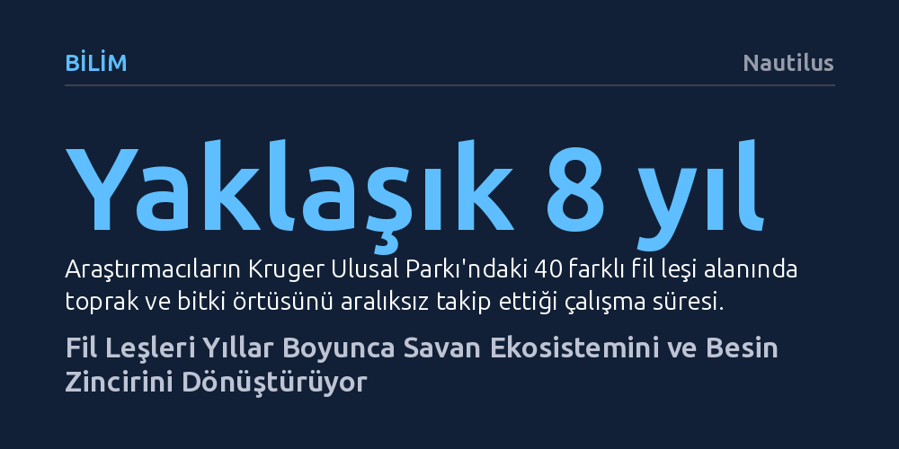

BILIM · Nautilus · 2026-10-14
Sekiz yıllık bir araştırma, fil leşlerinin topraktaki aşırı azot nedeniyle önce bitki gelişimini durdurduğunu, ardından otçulları besleyen yüksek besinli verimli meralara dönüştüğünü ortaya koydu. Bu devasa kalıntılar, tür çeşitliliğini azaltsa da ekosistemin besin döngüsünü yıllarca canlı tutuyor.
Devasa hayvanların ekosistem mühendisliğinin ölümle son bulmadığını, bıraktıkları leşlerin yıllar boyunca savanın besin döngüsünü ve işleyişini bizzat belirlediğini gösteriyor.

Filler hayattayken savanların çehresini değiştiren en güçlü ekosistem mühendisleri arasında yer alır. Ağaçları devirir, toprağı devasa dişleriyle havalandırır, su birikintileri kazar ve diğer hayvanların da kullandığı göç patikalarını açarlar. Ancak PNAS dergisinde yayımlanan kapsamlı bir saha araştırması, fillerin ekosistem üzerindeki bu dönüştürücü gücünün hayatlarını kaybettikten sonra da uzun yıllar boyunca kesintisiz sürdüğünü gösteriyor.
Kaliforniya Üniversitesi Santa Barbara kampüsünden biyologlar, Güney Afrika'daki Kruger Ulusal Parkı'nda tam sekiz yıl süren titiz bir takip yürüttü. Park geneline dağılmış 40 farklı fil leşinin bulunduğu noktaları düzenli olarak inceleyen araştırmacılar, dev cüsseli bu canlıların toprağa karıştığı andan itibaren bitki örtüsü ve mikrobiyal hayat üzerinde derin izler bıraktığını kanıtladı.
Bir fil öldüğünde gövdesindeki devasa biyokütle toprağa benzersiz miktarda besin maddesi bırakır. İlk etapta bu besin yığılmasının bitkisel hayatı canlandırması beklense de sahada tam tersi bir süreç işler. Toprağa aniden karışan aşırı miktardaki azot, başlangıçta bitkiler için zehirli bir ortam yaratarak mevcut florayı tamamen kurutur. Ancak bu ortam mikroskobik canlılar için aynı derecede yıkıcı değildir.
Besin zengini toprakta bakteriler hızla çoğalmaya başlar; fakat bu durum çeşitliliğin arttığı anlamına gelmez. Hızlı büyüyen birkaç baskın bakteri türü diğer tüm mikroorganizmaları saf dışı bırakarak mikrobiyal çeşitliliği ciddi şekilde düşürür. Zamanla aşırı azot seviyesi dengelendiğinde ise benzer bir tablo bitki örtüsünde tekrarlanır. Leş alanında sadece birkaç dayanıklı ot türü hakimiyet kurar. Böylece besin açısından son derece zengin bir odak noktası, şaşırtıcı biçimde biyolojik çeşitlilik açısından fakir bir soğuk noktaya dönüşür.
Biyoçeşitlilik azalmış olsa da leş sahasında yeşeren az sayıdaki ot türü, sıradan savan otlarından çok daha üstün bir besin değerine kavuşur. Yapraklar üzerinde gerçekleştirilen kimyasal analizler, fil kalıntılarının toprağı ne denli zenginleştirdiğini somut biçimde ortaya koydu. Araştırma ekibinin lideri Deron Burkepile bu değişimi, “Bu durum çayırları sulu aysberg marulundan besin deposu lezzetli bir marula dönüştürüyor,” sözleriyle tarif ediyor.
Zenginleşen otlar, bölgedeki otçul hayvanlar için karşı konulmaz bir beslenme vahası haline gelir. Leşin olduğu noktaya akın eden otçullar bu bereketli çayırlarla beslenirken bıraktıkları dışkılarla toprağı yeniden gübreler. Böylece tek bir fil leşinin başlattığı döngü, yıllarca kendi kendini besleyen ve savanın otçul dengesini ayakta tutan kesintisiz bir besin ağına evrilir.
Kruger Ulusal Parkı'nda her yıl yaklaşık 600 filin doğal yollarla öldüğü göz önüne alındığında, bu döngünün savan genelinde ne kadar devasa bir ölçekte işlediği daha net anlaşılıyor. İncelenen yalnızca 40 leşin bile yıllar süren böylesi güçlü ekolojik dalgalanmalar yaratması, dev hayvan ölümlerinin doğanın ritmindeki vazgeçilmez yerini kanıtlıyor.
On binlerce yıl önce Dünya üzerinde çok sayıda megafauna türü yaşarken bu süreç küresel ölçekte çok daha yaygın ve belirleyiciydi. Bugün ise filler nesli tükenme tehlikesiyle karşı karşıya olan son dev kara memelileri arasında bulunuyor. Araştırmacılar, bu devasa kalıntıların doğadan silinmesinin yalnızca bir türün yok oluşu anlamına gelmeyeceğini, tüm gezegendeki ekosistemlerin temel işleyiş mekanizmalarında geri dönülemez bir kırılmaya yol açabileceğini vurguluyor.